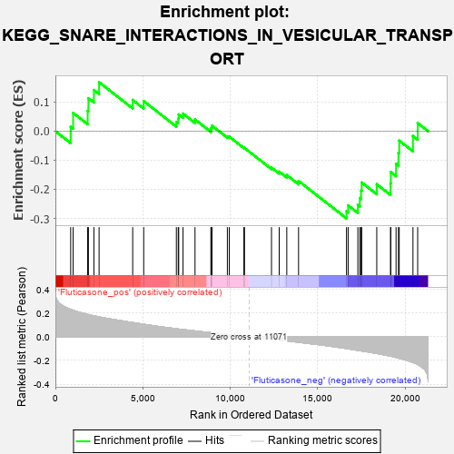

| | | Dataset | GSEA_expr_Flu.GSEA_timepoint.cls#Fluticasone |
| Phenotype | GSEA_timepoint.cls#Fluticasone |
| Upregulated in class | Fluticasone_neg |
| GeneSet | KEGG_SNARE_INTERACTIONS_IN_VESICULAR_TRANSPORT |
| Enrichment Score (ES) | -0.30005604 |
| Normalized Enrichment Score (NES) | -1.1077795 |
| Nominal p-value | 0.30866808 |
| FDR q-value | 1.0 |
| FWER p-Value | 0.975 |
Table: GSEA Results Summary

Fig 1: Enrichment plot: KEGG_SNARE_INTERACTIONS_IN_VESICULAR_TRANSPORT
Profile of the Running ES Score & Positions of GeneSet Members on the Rank Ordered List
| PROBE | DESCRIPTION
(from dataset) | GENE SYMBOL | GENE_TITLE | RANK IN GENE LIST | RANK METRIC SCORE | RUNNING ES | CORE ENRICHMENT | | 1 | BET1 | NA | | | 875 | 0.231 | 0.0151 | No |
| 2 | GOSR1 | NA | | | 1015 | 0.223 | 0.0630 | No |
| 3 | BNIP1 | NA | | | 1844 | 0.188 | 0.0699 | No |
| 4 | SNAP29 | NA | | | 1888 | 0.187 | 0.1134 | No |
| 5 | STX1A | NA | | | 2202 | 0.176 | 0.1416 | No |
| 6 | STX4 | NA | | | 2498 | 0.168 | 0.1686 | No |
| 7 | TSNARE1 | NA | | | 4419 | 0.120 | 0.1075 | No |
| 8 | SNAP25 | NA | | | 5049 | 0.105 | 0.1034 | No |
| 9 | STX11 | NA | | | 6915 | 0.067 | 0.0321 | No |
| 10 | SNAP23 | NA | | | 7022 | 0.065 | 0.0429 | No |
| 11 | STX19 | NA | | | 7049 | 0.065 | 0.0574 | No |
| 12 | VAMP3 | NA | | | 7297 | 0.060 | 0.0605 | No |
| 13 | GOSR2 | NA | | | 7982 | 0.049 | 0.0402 | No |
| 14 | VAMP1 | NA | | | 8888 | 0.034 | 0.0058 | No |
| 15 | STX12 | NA | | | 8919 | 0.033 | 0.0125 | No |
| 16 | STX5 | NA | | | 8954 | 0.033 | 0.0189 | No |
| 17 | STX7 | NA | | | 9831 | 0.018 | -0.0179 | No |
| 18 | STX17 | NA | | | 9939 | 0.017 | -0.0188 | No |
| 19 | USE1 | NA | | | 10775 | 0.004 | -0.0570 | No |
| 20 | SNAP47 | NA | | | 10810 | 0.004 | -0.0578 | No |
| 21 | VTI1B | NA | | | 12354 | -0.020 | -0.1253 | No |
| 22 | STX18 | NA | | | 12795 | -0.028 | -0.1393 | No |
| 23 | STX1B | NA | | | 13228 | -0.035 | -0.1510 | No |
| 24 | VAMP7 | NA | | | 13901 | -0.047 | -0.1713 | No |
| 25 | VAMP2 | NA | | | 16641 | -0.099 | -0.2758 | Yes |
| 26 | VAMP5 | NA | | | 16736 | -0.102 | -0.2554 | Yes |
| 27 | STX3 | NA | | | 17291 | -0.115 | -0.2534 | Yes |
| 28 | VAMP8 | NA | | | 17403 | -0.118 | -0.2300 | Yes |
| 29 | VAMP4 | NA | | | 17474 | -0.119 | -0.2042 | Yes |
| 30 | STX8 | NA | | | 17510 | -0.120 | -0.1766 | Yes |
| 31 | SEC22B | NA | | | 18372 | -0.141 | -0.1826 | Yes |
| 32 | STX16 | NA | | | 19158 | -0.163 | -0.1797 | Yes |
| 33 | VTI1A | NA | | | 19175 | -0.164 | -0.1406 | Yes |
| 34 | BET1L | NA | | | 19474 | -0.175 | -0.1121 | Yes |
| 35 | STX10 | NA | | | 19611 | -0.180 | -0.0747 | Yes |
| 36 | YKT6 | NA | | | 19656 | -0.182 | -0.0325 | Yes |
| 37 | STX6 | NA | | | 20441 | -0.217 | -0.0164 | Yes |
| 38 | STX2 | NA | | | 20710 | -0.234 | 0.0280 | Yes |
Table: GSEA details [plain text format]
Fig 2: KEGG_SNARE_INTERACTIONS_IN_VESICULAR_TRANSPORT
Blue-Pink O' Gram in the Space of the Analyzed GeneSet
Fig 3: KEGG_SNARE_INTERACTIONS_IN_VESICULAR_TRANSPORT: Random ES distribution
Gene set null distribution of ES for KEGG_SNARE_INTERACTIONS_IN_VESICULAR_TRANSPORT